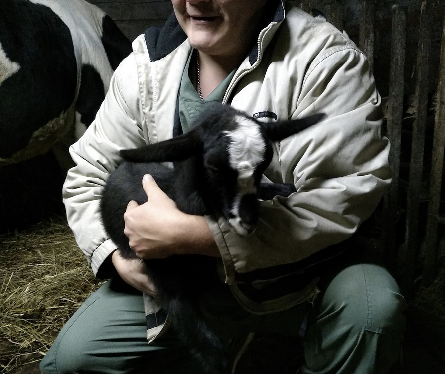
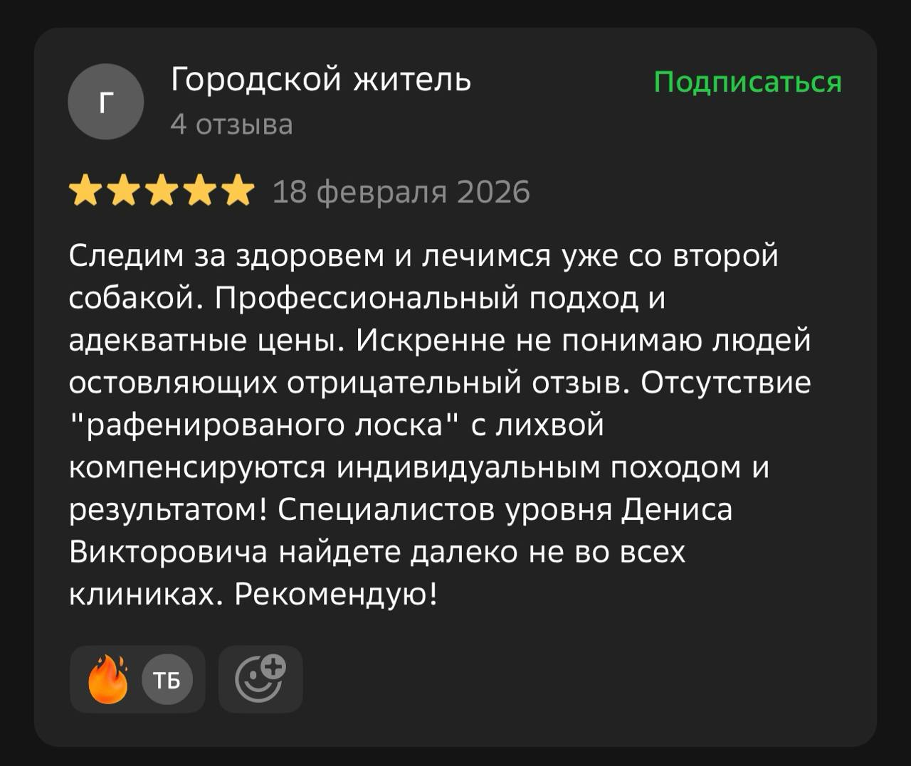
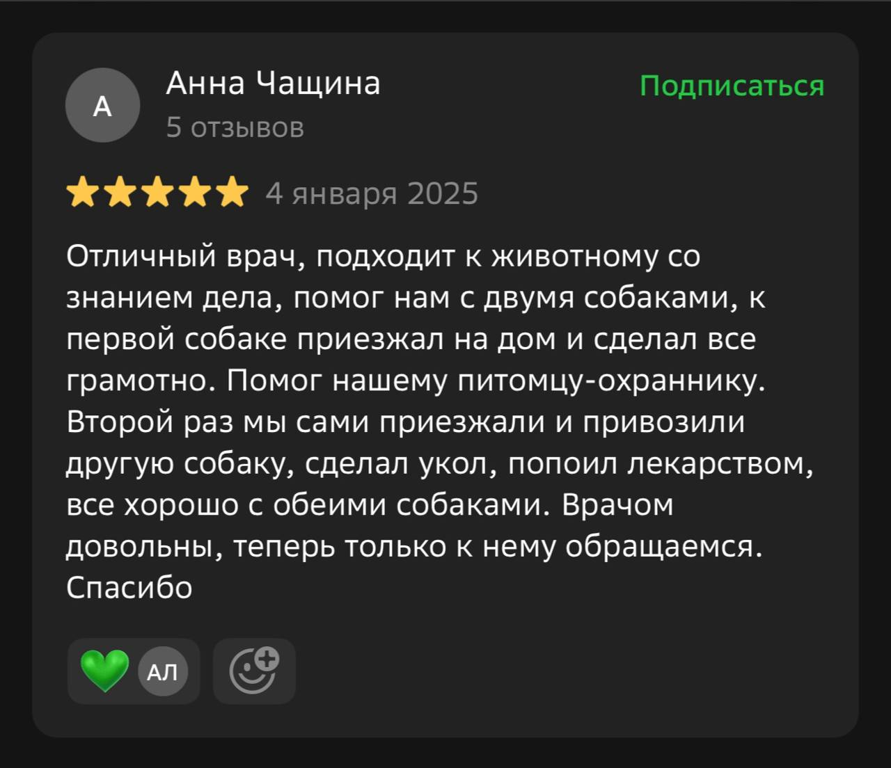
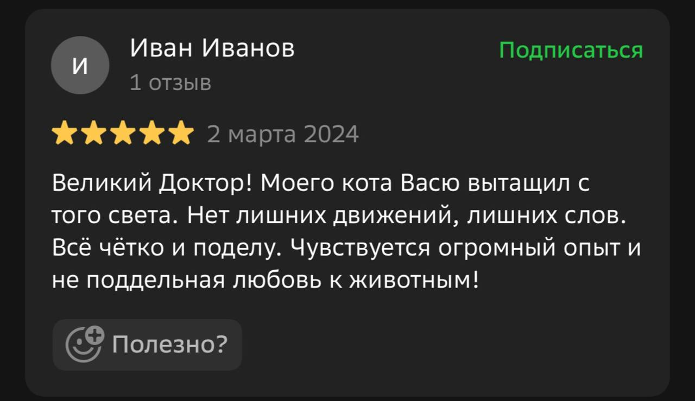

Клиника как дома
Минимум стресса для питомца: ласково, дружелюбно, по-домашнему.
↗семейная ветклиника · Новосибирск · ул. Богдана Хмельницкого, 39
Домашняя семейная клиника без конвейера: спокойный холл, внимательный осмотр, выезд к питомцу, ночной прием и помощь в выходные дни.
Минимум стресса для питомца: ласково, дружелюбно, по-домашнему.
↗Не поток пациентов, а внимательная работа с каждым питомцем.
↗Если питомец не может добраться сам, доставим хоть на руках и даже ночью.
↗Открыты для острых ситуаций ночью и тогда, когда остальные клиники закрыты.
↗о клинике
Вет.клиника Дениса - небольшая семейная клиника, где питомец не чувствует себя как «на конвейере». Мы думаем не только о заболевании, но и о том, как уменьшить стресс в незнакомой обстановке.
У нас нет дорогого диагностического оборудования, но есть главное - опытный врач Денис с большим сердцем, заботливыми и сильными руками.
Во многих случаях осмотр опытного доктора вместе с лабораторными анализами заменяет дорогую диагностику. В сложных случаях мы организуем обследование у специалистов, которым доверяем.

реальный прайс
Без лекарств и расходников.
Без лекарств и расходников.
Без лекарств и расходников.
Домашний холл снижает стресс.
Врач смотрит пациента глазами, руками и опытом.
Лаборатория помогает подтвердить картину.
Сложные обследования у проверенных специалистов.
Квалифицированно и заботливо.
Телефон и Telegram-бот для быстрой записи.
Реальные истории клиентов.
реальные отзывы
Профессиональный подход, адекватные цены, индивидуальная работа и результат. Рекомендую!

Отличный врач, помог с двумя собаками. Теперь обращаемся только к нему.

Великий Доктор! Все четко и по делу, чувствуется огромный опыт.

Нет. Онлайн-помощник собирает первичную информацию и помогает понять срочность, но диагноз и лечение назначает только врач после осмотра.
Да, мы можем приехать домой к питомцу. Выезд на дом необходимо согласовать по телефону.
Да, в случае острой необходимости для питомца мы готовы принять его и ночью, при необходимости выехать за ним и привезти в клинику.
Чтобы питомцу было спокойнее, а владельцу - теплее и понятнее. Домашний холл снижает ощущение стресса.
Мы небольшая семейная клиника, у нас нет своего диагностического оборудования, но в большинстве случаев для правильной постановки диагноза достаточно лабораторных анализов и осмотра питомца квалифицированным врачом. В сложных случаях мы отвозим пациентов на диагностику к лучшим специалистам города, которые умеют грамотно расшифровывать результаты обследования.
У нас не дорого: мы стараемся держать цены доступными, но не можем работать бесплатно или очень дешево. Важно учитывать время доктора, его опыт и ценность жизни питомца. Подумайте, кто для вас питомец - член семьи или игрушка, и ответ найдется внутри.
Кошки, собаки, кролики, морские свинки, а также лошади, коровы и козы.
Можно написать в Telegram или MAX: зафиксируем условия, количество клиентов, формат рекомендаций и партнерства.
полезные советы
Карточки будущего блога.
Следите за аппетитом, активностью, дыханием и поведением.
Осмотры, вакцинация и обработки помогают не ждать осложнений.
Регулярные обработки и осмотр шерсти после прогулок.
контакты
Позвоните, напишите в Telegram-бот или напрямую врачу.
Здесь будет интерактивная карта или виджет 2ГИС/Яндекс.Карт.